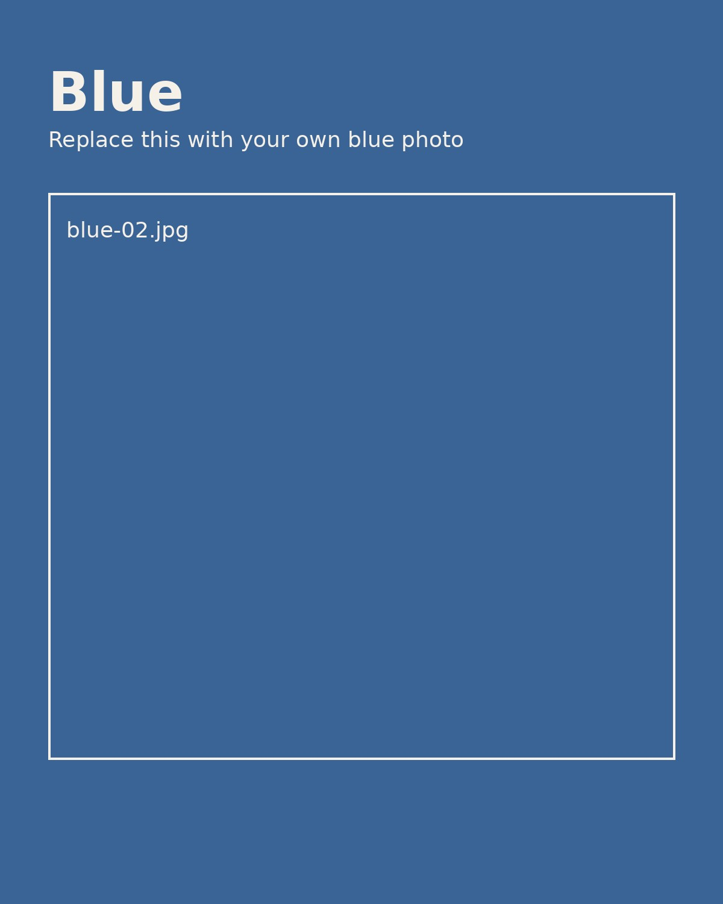

How to add more blue photos
<article class="photo-card">
<img src="images/blue/your-file-name.jpg" alt="Describe the photo">
<div class="photo-meta">
<h3>your-file-name.jpg</h3>
<p>Optional caption here.</p>
</div>
</article>